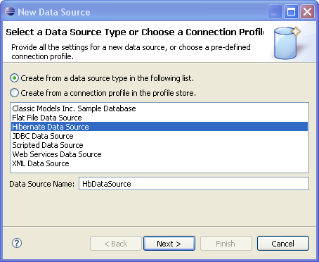
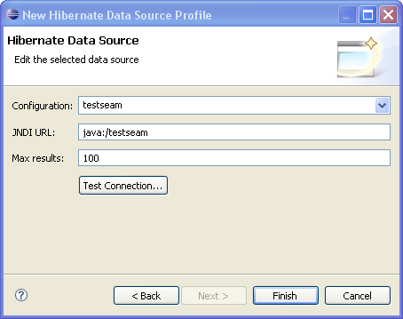
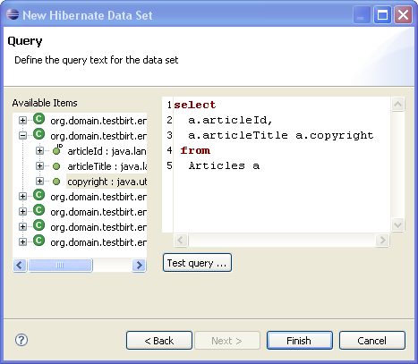
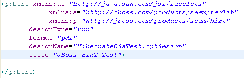
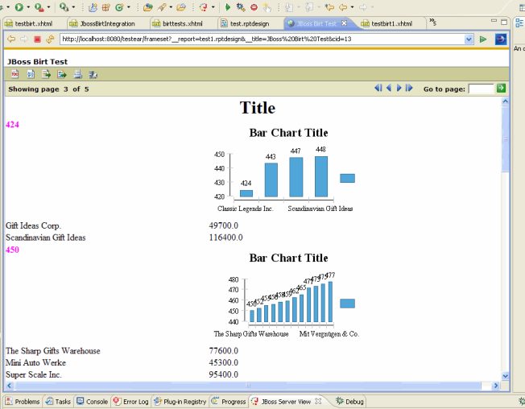

< Main Index Visual Page Editor News >
JBoss BIRT Integration |
|
|
Hibernate Data Source |
The Hibernate Data Source enables a user to specify a Hibernate Configuration or JNDI URL.   |
|
Hibernate Data Set |
When the Hibernate Data Source is set up, the user can create a Hibernate Data Set using a HQL query in the way in which the JDBC driver creates a SQL query.  |
|
Integration with Seam |
The JBoss BIRT Integration feature contains the "birt" tag that allows the user to add a BIRT report to an .xhtml file.  |
|
Deployment |
Basic understanding on BIRT is required to use the integration, see BIRT homepage for details. Below we describe the current needed configuration - these might change before GA. In any case when configured correctly you will be able to view/render the designed reports in your Seam (or any other Web application)  A Seam project that includes the BIRT facet can be deployed as any project. If you define the Hibernate ODA driver, the JBoss BIRT engine will use JNDI URL that has to be bind to either Hibernate Session Factory or Hibernate Entity Manager Factory. Any Seam project with the BIRT facet that uses the Hibernate ODA driver has to bind a Hibernate session factory or an Hibernate entity manager factory. It doesn't matter which of these two factories the user binds because the Hibernate ODA driver will recognize the type of the object. When creating a Seam EAR project, Hibernate Entity Manager Factory is bound to java:/{projectName}EntityManagerFactory. All the user needs to do is using the Hibernate Configuration created automatically. The user can use default values for the Hibernate Configuration and JNDI URL within the BIRT Hibernate Data Source. When using a Seam WAR project, neither HSF nor HEMF aren't binded to JNDI by default. The user has to do this manually. For instance, HSF can be bound to JNDI adding the following property to the persistence.xml file: <property name="hibernate.session_factory_name" value="java:/projectname"/>
the user can use 'java:/projectname' as the JNDI URL property when creating a BIRT Hibernate Data Source. |
| For more details, see JBIDE-2220. |
|